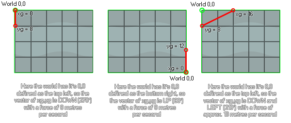

physics_world_gravity(xg, yg)
| Argument | La description |
|---|---|
| xg | La composante x du vecteur de gravité |
| yg | La composante y du vecteur de gravité |
Retours: N / A
Comme avec toutes les fonctions de physique, physics_world_gravity ne fonctionnera sur une instance que si la salle a un monde physique défini dans l'éditeur de pièce ou en utilisant physics_world_create. Il utilisera ensuite le point de définition 0,0 du monde physique pour calculer la direction et la force de la gravité sur la base du vecteur calculé à partir des entrées xg et yg. Voici quelques images pour illustrer...

Comme vous pouvez le voir, les coordonnées xg, yg sont relatives à la position de 0,0 telle que définie pour le monde physique, et la gravité elle-même est calculée comme un vecteur de ces deux composantes. Ainsi, les valeurs par défaut de 0,10 vous donneront une direction de gravité vers le bas (270 degrés) avec une accélération de 10 mètres par seconde au carré. Notez les mètres par seconde au carré! Comme toutes les fonctions physiques, la gravité est calculée en utilisant des mètres comme mesure de base, de sorte que l'échelle de pixel à mètre que vous définissez physics_world_create La fonction est importante ici. La gravité est également cumulative sur l'objet (mais la quantité exacte dépend de ce que vous avez défini pour la fonction physics_fixture_set_linear_damping ), ce qui signifie que dans une pièce avec une room_speed de 60, sans amortissement, l'instance accélèrera de 10 mètres par seconde, toutes les secondes - ce qui, si vous avez une échelle de 0.1 pixel to meter, revient à dire une vitesse de 100 pixels par seconde en 60 étapes.
physics_world_gravity(-5, 0)
Le code ci-dessus définira la gravité (en supposant que la physique de la pièce 0,0 est en haut à gauche) vers la droite - 0 degré - avec une accélération de 5 mètres par seconde au carré.